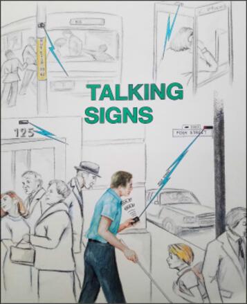

Talking Signs
The invisible city: infrared beams broadcasting spoken directions that only you can hear, turning the built environment into an ambient interface for blind navigation.

Overview
Talking Signs (originally 'Talking Lights') is a remote infrared audible signage system that allows blind and visually impaired travelers to independently locate and identify destinations, transit facilities, and services. First conceived by William Loughborough in 1979 at the Smith-Kettlewell Eye Research Institute in San Francisco, the system consists of fixed infrared transmitters that continuously broadcast digitally recorded spoken messages on modulated infrared light beams, and handheld receivers carried by blind users. When a user points the receiver toward a transmitter, the spoken message is heard through a built-in speaker; the signal grows clearer and louder as the user points more directly toward the source, providing intuitive directional feedback. Unlike audio beacons that broadcast sound to everyone in an area, Talking Signs are silent to the unaided ear and provide information only to the person carrying a receiver — preserving privacy and avoiding noise pollution.
The technology evolved through the 1980s with contributions from Bill Crandall, Bill Gerrey, Albert Alden, Erich Sutter, and B.L. Bentzen at SKERI. Loughborough left SKERI to found Love Electronics in Goldendale, Washington, which commercialized the system with transmitters priced at $150 and receivers at $250. By the mid-1990s, large-scale deployments were installed in San Francisco's Powell Street BART/Muni station (93 transmitters across three levels), Market Street intersections, the San Francisco New Main Library, and transit systems in Seattle, New York, and Washington DC. Mitsubishi later produced transmitters and receivers at scale. Formal human-factors studies demonstrated dramatic improvements in independent navigation: blind participants using Talking Signs began crossing streets during the Walk phase 99% of the time (compared to 66% without) and needed help finding crosswalks only 1% of the time (compared to 19%). In 2000, the technology was incorporated into US federal accessibility standards (ADAAG 703.7). In 2016, Joshua Miele at SKERI created 'overTHERE,' a free iOS app that simulates the directional pointing interface using GPS and compass data, giving the Talking Signs concept a software-only afterlife used by thousands daily.
Deep dive
The core interaction is deceptively simple: a transmitter at a fixed location continuously broadcasts a digitally recorded spoken message (e.g., 'Powell Street BART station — escalator to trains') modulated onto a 25 kHz FM subcarrier on infrared light at 850–950 nm wavelength. A blind user carries a pocket-sized receiver (4 × 2 × 1 inches) with a photodiode sensor behind a directional aperture. Scanning the environment by pointing the receiver in different directions, the user hears spoken messages when the aperture is aligned with a transmitter. The signal provides natural directional feedback: clarity and loudness increase as pointing accuracy improves and distance decreases; pointing away causes the signal to become staticky and eventually squelch. Multiple overlapping signals are resolved by FM capture effect — the stronger signal (closer or more directly pointed) captures the receiver, requiring approximately a 20 dB power ratio. Because infrared is line-of-sight and blocked by walls, it naturally matches the behavior of visual signs — you can't 'hear' a sign around a corner any more than you could see one. The transmitter broadcasts continuously, meaning the user chooses when to access the information (a deliberate ADA-conscious design choice to keep the system 'refusable'). The intelligence is entirely in the receiver; the transmitter is a 'dumb' repeater. This split — smart receiver, dumb infrastructure — presages the smartphone-as-sensor paradigm by decades.
The Fall 1991 issue of the Smith-Kettlewell Technical File (SKTF), edited by Bill Gerrey and still available in full online, is one of the richest primary source documents in the museum's research archive. Across dozens of pages, it provides complete schematics for both transmitters and receivers, a bill of materials with prices, beam-dispersion physics calculations, installation geometry guidelines, human-factors deployment philosophy, and circuit-level explanations. The transmitter used a 512K-bit EPROM for ~8 seconds of sampled speech at 64 Kbps, modulating an FM subcarrier with a CD4046 phase-locked loop. The receiver used six Siemens BPW34 photodiodes in parallel behind a Kodak Wratten Filter No. 87C (passing 80% IR, blocking 99.5% visible light), with an LM311 comparator providing squelch with RC hang time. The document addresses practical deployment concerns: how to align transmitters so beams don't bleed between floors, how to handle direct sunlight (which contains IR), how to design street-sign arrays with 48 dual-LEDs for crosswalk coverage. The document even includes a troubleshooting section and a parts-ordering guide with 1991 pricing: $0.60 per LED in small quantities, $150 for a custom-message transmitter, $250 for a receiver. Gerhard Sollner of the SKTF later wrote a supplementary issue with refinements.
Talking Signs is one of the most rigorously evaluated accessibility interventions in HCI history. Bill Crandall and B.L. Bentzen at SKERI, working with UCSB geographers James Marston and Reginald Golledge, conducted multi-year field studies funded by the Federal Transit Administration and PATH/UCTC. At San Francisco's Powell Street Station, 35 of 36 blind participants successfully completed easy routes independently, with 24 completing medium and hard routes — including participants with only written instructions (no hands-on training). At street intersections, the improvement was dramatic: participants using Talking Signs began crossing during the Walk phase 99% of the time (vs. 66% without), started from within the crosswalk 97% of the time (vs. 70%), and needed help finding the crosswalk only 1% of the time (vs. 19%). One participant remarked that in Powell Station he was 'truly equal' to sighted travelers. The formal Steering Committee recommended RIAS as the 'preferred technology enabling print-handicapped persons to travel independently in transit facilities.' These findings directly informed the US Access Board's adoption of RIAS into building code ADAAG 703.7, which specifies the modulation frequency (25 kHz), wavelength range (850-950 nm), and optical power density (26 picowatts/mm² at receiver aperture) as federal requirements.
Despite the proven effectiveness, Talking Signs never achieved universal deployment. SKERI's own assessment is candid: 'The question of who would pay for large-scale transmitter installation and receiver distribution proved insurmountable, and Talking Signs were never adopted broadly enough to make them a universal accommodation.' The capital cost of installing and maintaining hundreds of physical transmitters across a city — each requiring power, weatherproofing, and periodic re-recording — was a barrier that neither transit agencies nor city governments were willing to fund at scale. The 1995 Powell Street installation (93 transmitters, $300/sign for interior deployments) was funded by an FTA demonstration grant, not an operational budget. The receivers, at $250 each, also required distribution and maintenance. This infrastructure problem — brilliant interaction design undone by deployment economics — is a recurring theme in ambient and ubiquitous computing, and Talking Signs is one of its earliest and most instructive case studies.
In 2016, Smith-Kettlewell scientist Joshua Miele — who is himself blind — released 'overTHERE,' a free iOS app that translates the Talking Signs interaction model into a software-only experience. Instead of physical infrared transmitters, overTHERE uses Google Places and OpenStreetMap data as 'virtual transmitters' and the iPhone's compass and GPS as a 'virtual receiver.' The user holds the phone flat and sweeps it around their body; as the phone points toward a nearby destination, that destination is announced through headphones or the speaker, with audio spatialization providing the same directional feedback as the original hardware. The app supports 20+ languages and is used by thousands of blind travelers daily worldwide — solving the infrastructure problem by piggybacking on a device users already carry. Miele developed overTHERE at a Google MakeAthon in 2015, where it won the Improved Mobility prize. The project page at SKERI notes that funding is being sought for a new version as of 2025. This 40-year arc — from modulated IR beams to smartphone compasses, from dedicated hardware to ubiquitous platforms — makes Talking Signs one of the longest continuously researched interaction models in HCI.
Team & pioneers
- William (Bill) Loughborough. Original inventor (1979). Published 'Talking Lights' in the Journal of Visual Impairment & Blindness. Left SKERI to found Love Electronics, which commercialized the system.
- William (Bill) Crandall, PhD. Principal investigator at SKERI's Rehabilitation Engineering Research Center. Led transit deployments and human-factors evaluations. Presented at CSUN 1998.
- Billie Louise (B.L.) Bentzen, PhD. Co-investigator, Accessible Design for the Blind. Led intersection-crossing research. Co-authored the definitive Project ACTION transit guide (1995).
- William (Bill) Gerrey. Editor of the Smith-Kettlewell Technical File. Designed receiver circuits and wrote the definitive Fall 1991 SKTF issue on Talking Signs.
- Dr. Erich Sutter. Designed the first FM receiver for Talking Signs; chose FM modulation to reject ambient light interference.
- Albert Alden. Designed front-end receiver circuitry and digital modulators.
- James Marston, PhD & Reginald Golledge, PhD. UC Santa Barbara geographers. Led multi-year field experiments on campus, transit, and intersection deployments. Secured PATH/UCTC research grants.
- Joshua Miele, PhD. SKERI scientist. Created Virtual Talking Signs project (2011) and the overTHERE iOS app (2016), continuing the Talking Signs lineage into the smartphone era.
- Smith-Kettlewell Eye Research Institute (SKERI). San Francisco-based research institute focused on blindness and visual impairment. Home to the Talking Signs project for over 40 years. Published the SKTF and hosted the RERC program.
Media
Sources
- Wikipedia: Remote Infrared Audible Signage
- SKTF Fall 1991 (complete issue): Talking Signs schematics, parts list, deployment guide
- SKERI: Talking Signs project page (40-year history)
- Crandall, Bentzen, Myers, Steed (1995): 'Talking Signs Remote Infrared Signage: A Guide for Transit Managers' (FTA Project ACTION)
- Crandall et al. (1999): 'Remote Infrared Signage Evaluation for Transit Stations and Intersections,' JRRD 36(4)
- Crandall (1998): 'Talking Signs Remote Infrared Audible Signage,' CSUN 1998 Conference
- Loughborough (1979): 'Talking Lights,' JVIB 73(6)
- Brabyn & Brabyn (1983): 'An Evaluation of Talking Signs for the Blind,' Human Factors 25(1)
- Marston & Golledge: UCSB RIAS research overview
- Marston & Golledge photos and illustrations
- SKERI: overTHERE app project page
- ADA Accessibility Guidelines (ADAAG) 703.7 — Remote Infrared Audible Sign Systems